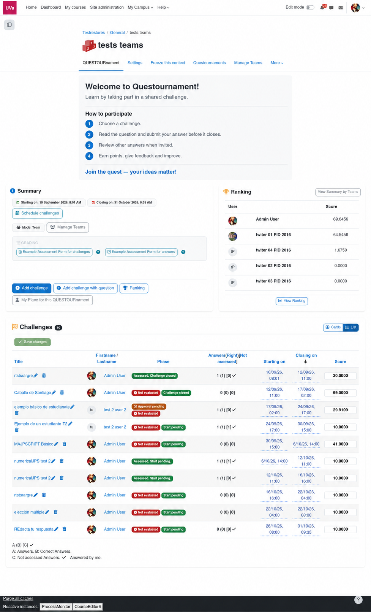

Aprendizaje activo · Universidad de Valladolid
Aprender también es preguntar.
Convierte una asignatura en un espacio donde el alumnado crea desafíos, argumenta respuestas y aprende a evaluar con criterios compartidos.

Una metodología, varios papeles
El conocimiento circula.
El docente diseña el marco y supervisa. El alumnado puede asumir el papel de autor, participante y evaluador. La actividad ocurre dentro de Moodle.
Diseñar
Fechas, criterios y rúbricas visibles desde el comienzo.
Preparar la actividad →Componer
Desafíos propios o varias preguntas del banco, ordenadas y puntuadas.
Ver la composición →Acompañar
Respuestas, feedback, evaluación entre pares y supervisión docente.
Ver la evaluación →Investigación y práctica
La evidencia importa tanto como la experiencia.
El proyecto original cita estudios en ingeniería y medicina. La sección de evidencias explica qué se investigó y qué funciones actuales no estaban presentes en esos estudios.
Consultar las referencias académicas →«Competición, colaboración y reconocimiento social» son el punto de partida del diseño docente; la calidad del aprendizaje exige mirar más allá del ranking.